Edge AI / paired rerun · September 11, 2026
When local AI
shares your GPU.
Compare quiet and contended runs—then check whether they did the same work.
One-shot synthesizes six source cards about robotic arms and EdgeAI. The autonomous agent chooses source reads, sees screenshots and writes a cited answer. Quiet adds no benchmark contender; combined runs video, eight active tabs and synthetic WebGL.
Memory footprint
| Model | Weight files, GB | Quiet peak, GB | Combined peak, GB | Evidence |
|---|---|---|---|---|
| Cloud | Not exposed | Not exposed | Not exposed | Remote model memory not exposed |
| 4B | 3.97 | 5.53 | 5.53 | Previous campaign |
| 9B | 7.42 | 9.39 | 9.39 | Complete, 3 repetitions |
| 35B | 23.69 | 7.25 | 7.25 | Complete, 3 repetitions |
Peaks are MLX-tracked allocations across both tasks, including model and inference buffers—not total process memory or OS file cache. GB = 10⁹ bytes. Cloud memory is not exposed. Memory data ↗
Why the 35B peak can be below 9B
The 35B adapter retains 4.88 GB of tensor payload in its resident files and pages 18.12 GB of expert payload through a 0.50 GB cache. Its 23.69 GB checkpoint is not loaded entirely into unified memory. Paging reduces tracked allocations while adding expert-access latency; the measured peak does not include every host allocation.
Cloud baseline · GPT-6 Astra
10/12 pairs match input and cached-input counts at every step; 0/12 match generated token counts too. Reasoning still varies. These are application observations, not an isolated contention effect.
Observed direction: combined was slower in 5/6 one-shot pairs and faster in 4/6 replayed-agent pairs. The remaining work differences prevent a causal speedup claim.
Median of paired latency ratios: combined: one-shot 1.101× (n=6), agent 0.966× (n=6). Generated-work differences still confound these cloud ratios.
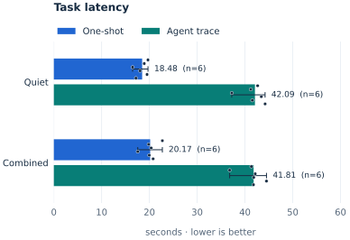
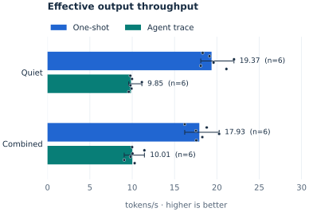
Run controls & answer checks
Previous cloud campaign, unchanged. GPT-6 Astra, high reasoning, signed-in Codex CLI. Six balanced quiet/combined pairs. One-shot is fresh synthesis; the five-call agent trace replays identical prompts and screenshots from a prior real trajectory. Fresh autonomous-agent results are separate below.
Answer-length check: one-shot 220–234 words, agent 221–232 words. 18/24 meet the requested 180–230 words; length alone is not a factual-quality score.
Exact medians & decode throughput
| Load | Task | n | Seconds | Effective tok/s | Decode tok/s | Peak MLX, GB | Paired latency × |
|---|---|---|---|---|---|---|---|
| combined | Agent trace | 6 | 41.81 | 10.01 | Not exposed | Not exposed | 0.966× |
| combined | One-shot | 6 | 20.17 | 17.93 | Not exposed | Not exposed | 1.101× |
| quiet | Agent trace | 6 | 42.09 | 9.85 | Not exposed | Not exposed | Baseline |
| quiet | One-shot | 6 | 18.48 | 19.37 | Not exposed | Not exposed | Baseline |
Every cloud pair: time, cache and reasoning
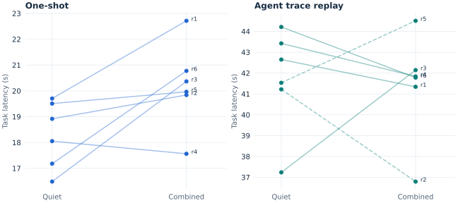
Quiet → combined. Dashed lines mark cache mismatches. Reasoning counts remain different even where cache matches.
| Pair | Seconds | Paired ratio | Cached input | Reasoning output | Visible output | Input/cache match |
|---|---|---|---|---|---|---|
| One-shot r1 | 19.70 → 22.71 | 1.153× | 7424 → 7424 | 66 → 77 | 361 → 368 | Yes |
| Trace r1 | 42.65 → 41.34 | 0.969× | 37120 → 37120 | 160 → 86 | 417 → 413 | Yes |
| One-shot r2 | 18.92 → 19.84 | 1.049× | 7424 → 7424 | 122 → 117 | 362 → 373 | Yes |
| Trace r2 | 41.22 → 36.80 | 0.893× | 37120 → 36096 | 122 → 95 | 411 → 421 | No |
| One-shot r3 | 16.49 → 20.37 | 1.235× | 7424 → 7424 | 66 → 116 | 363 → 357 | Yes |
| Trace r3 | 37.24 → 42.14 | 1.132× | 37120 → 37120 | 96 → 165 | 415 → 423 | Yes |
| One-shot r4 | 18.05 → 17.56 | 0.973× | 7424 → 7424 | 111 → 103 | 354 → 356 | Yes |
| Trace r4 | 43.42 → 41.84 | 0.964× | 37120 → 37120 | 151 → 132 | 425 → 410 | Yes |
| One-shot r5 | 19.51 → 19.96 | 1.023× | 7424 → 7424 | 116 → 168 | 353 → 365 | Yes |
| Trace r5 | 41.53 → 44.51 | 1.072× | 29696 → 37120 | 119 → 188 | 412 → 403 | No |
| One-shot r6 | 17.18 → 20.77 | 1.209× | 7424 → 7424 | 69 → 193 | 363 → 365 | Yes |
| Trace r6 | 44.21 → 41.78 | 0.945× | 37120 → 37120 | 68 → 159 | 424 → 430 | Yes |
Fresh autonomous agents (separate from replay)
The model chooses its source reads and produces its own trajectory. Call count, outputs and reasoning can differ; these are not matched inference work.
0/3 pairs match per-step input/cache counts; source order also differs. These timings cannot establish a cloud contention benefit.
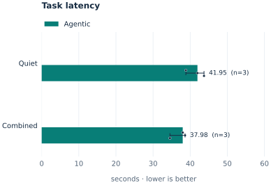
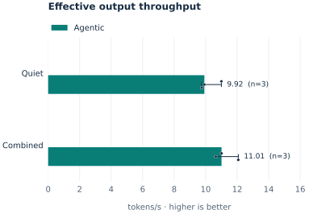
Exact medians & decode throughput
| Load | Task | n | Seconds | Effective tok/s | Decode tok/s | Peak MLX, GB | Paired latency × |
|---|---|---|---|---|---|---|---|
| combined | Agentic | 3 | 37.98 | 11.01 | Not exposed | Not exposed | 0.920× |
| quiet | Agentic | 3 | 41.95 | 9.92 | Not exposed | Not exposed | Baseline |
Local 4B
Holo 3.1 4B, affine 4-bit MLX. Previous campaign, with its original guards: quiet controls for video, eight active browser tabs, synthetic WebGL, their combination, heavy Metal matrix multiplication, and 4 GiB file remapping.
Median of paired latency ratios: combined: one-shot 1.204× (n=3), agent 1.189× (n=3); heavy GPU: one-shot 5.799× (n=3), agent 5.061× (n=3).
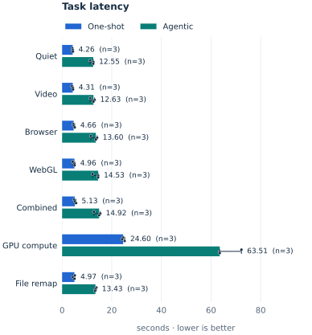
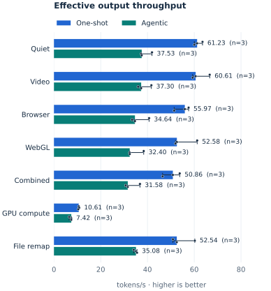
Run controls & answer checks
36/36 completed pairs match prompts, generated token counts and final answer. Different models can still produce different answers.
Host swap-outs across completed trial groups: 434.2 MiB (page equivalents). This includes loading and warmup; it is not a per-task attribution. Stopped trials are listed separately.
Answer-length check: one-shot 174–174 words, agent 88–88 words. 0/42 meet the requested 180–230 words; length alone is not a factual-quality score.
Exact medians & decode throughput
| Load | Task | n | Seconds | Effective tok/s | Decode tok/s | Peak MLX, GB | Paired latency × |
|---|---|---|---|---|---|---|---|
| browser | Agentic | 3 | 13.60 | 34.64 | 67.94 | 5.53 | 1.083× |
| browser | One-shot | 3 | 4.66 | 55.97 | 68.33 | 4.87 | 1.103× |
| combined | Agentic | 3 | 14.92 | 31.58 | 62.47 | 5.53 | 1.189× |
| combined | One-shot | 3 | 5.13 | 50.86 | 61.83 | 4.87 | 1.204× |
| fault | Agentic | 3 | 13.43 | 35.08 | 70.26 | 5.53 | 1.064× |
| fault | One-shot | 3 | 4.97 | 52.54 | 70.03 | 4.87 | 1.143× |
| game | Agentic | 3 | 14.53 | 32.40 | 64.83 | 5.53 | 1.152× |
| game | One-shot | 3 | 4.96 | 52.58 | 64.11 | 4.87 | 1.155× |
| gpu | Agentic | 3 | 63.51 | 7.42 | 12.38 | 5.64 | 5.061× |
| gpu | One-shot | 3 | 24.60 | 10.61 | 12.64 | 4.87 | 5.799× |
| quiet | Agentic | 3 | 12.55 | 37.53 | 74.88 | 5.53 | Baseline |
| quiet | One-shot | 3 | 4.26 | 61.23 | 74.37 | 4.87 | Baseline |
| video | Agentic | 3 | 12.63 | 37.30 | 74.30 | 5.53 | 1.007× |
| video | One-shot | 3 | 4.31 | 60.61 | 74.06 | 4.87 | 1.010× |
Local 9B
Holo 3.1 9B, affine 4-bit MLX. Three fresh repetitions of all seven conditions: quiet, video, eight browser tabs, synthetic WebGL, combined desktop load, heavy GPU compute and 4 GiB file remapping. Custom thermal and swap-volume cutoffs are removed.
Median of paired latency ratios: combined: one-shot 1.152× (n=3), agent 1.078× (n=3); heavy GPU: one-shot 4.648× (n=3), agent 4.327× (n=3).
Source-use failure: at least one final answer cited unread source(s) S5. The original bracket-only runtime gate missed alternative citation formatting; a separate format-tolerant audit flags it here.
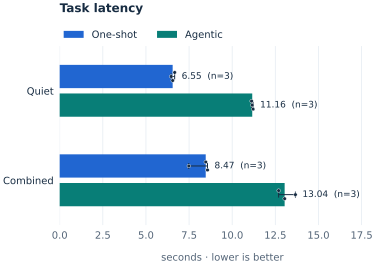
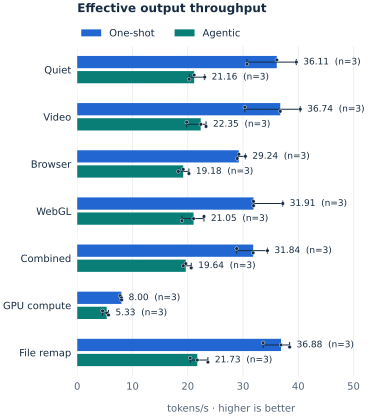
Run controls & answer checks
Only this full matrix enters the 9B charts; the earlier quiet/combined-only runs are preserved separately. Full 9B protocol ↗
36/36 completed pairs match prompts, generated token counts and final answer. Different models can still produce different answers.
Host swap-outs across completed trial groups: 5060.9 MiB (page equivalents). This includes loading and warmup; it is not a per-task attribution. Stopped trials are listed separately.
Answer-length check: one-shot 176–176 words, agent 162–162 words. 0/42 meet the requested 180–230 words; length alone is not a factual-quality score.
Swap and thermal observations
Separate host observations across loading, warmup and both tasks. Swap-outs are VM page equivalents. Thermal pressure is macOS status, not degrees Celsius. Neither counter stops this campaign.
| Load | Trials | Median swap-outs, MiB | Minimum available, GiB | Maximum thermal pressure |
|---|---|---|---|---|
| quiet | 3 | 0.0 | 2.69 | Fair |
| video | 3 | 0.0 | 2.62 | Fair |
| browser | 3 | 887.3 | 2.25 | Fair |
| game | 3 | 0.0 | 3.15 | Fair |
| combined | 3 | 848.2 | 2.51 | Fair |
| gpu | 3 | 0.0 | 2.41 | Fair |
| fault | 3 | 0.0 | 2.99 | Fair |
Exact medians & decode throughput
| Load | Task | n | Seconds | Effective tok/s | Decode tok/s | Peak MLX, GB | Paired latency × |
|---|---|---|---|---|---|---|---|
| browser | Agentic | 3 | 13.71 | 19.18 | 40.40 | 9.39 | 1.103× |
| browser | One-shot | 3 | 8.99 | 29.24 | 39.55 | 8.27 | 1.235× |
| combined | Agentic | 3 | 13.39 | 19.64 | 43.43 | 9.39 | 1.078× |
| combined | One-shot | 3 | 8.26 | 31.84 | 42.05 | 8.27 | 1.152× |
| fault | Agentic | 3 | 12.11 | 21.73 | 49.64 | 9.39 | 1.035× |
| fault | One-shot | 3 | 7.13 | 36.88 | 48.23 | 8.27 | 1.073× |
| game | Agentic | 3 | 12.49 | 21.05 | 45.15 | 9.39 | 1.069× |
| game | One-shot | 3 | 8.24 | 31.91 | 40.50 | 8.27 | 1.066× |
| gpu | Agentic | 3 | 49.35 | 5.33 | 9.41 | 9.39 | 4.327× |
| gpu | One-shot | 3 | 32.89 | 8.00 | 9.21 | 8.27 | 4.648× |
| quiet | Agentic | 3 | 12.43 | 21.16 | 43.67 | 9.39 | Baseline |
| quiet | One-shot | 3 | 7.28 | 36.11 | 45.02 | 8.27 | Baseline |
| video | Agentic | 3 | 11.77 | 22.35 | 49.24 | 9.39 | 1.032× |
| video | One-shot | 3 | 7.16 | 36.74 | 49.08 | 8.27 | 0.982× |
Paged 35B-A3B NVFP4
Holo 3.1 35B-A3B NVFP4 uses the official checkpoint through a custom Metal adapter: BF16 dense matrices, all experts on disk, a 0.5 GB expert cache. This is paged execution, not native NVIDIA NVFP4.
Median of paired latency ratios: combined: one-shot 1.146× (n=3), agent 1.150× (n=3).
Completion is not task success: the first quiet agent answer omitted the requested frontier-policy comparison. Its timing is retained, with the answer-length check below.
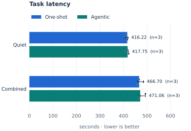
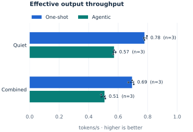
Run controls & answer checks
6/6 completed pairs match prompts, generated token counts and final answer. Different models can still produce different answers.
The full 9B campaign interrupted the series between conditions. Both members of the affected 35B repetition were repeated together. The extra completed combined condition is retained separately and excluded from the main medians.
Host swap-outs across completed trial groups: 752.2 MiB (page equivalents). This includes loading and warmup; it is not a per-task attribution. Stopped trials are listed separately.
Answer-length check: one-shot 211–211 words, agent 127–127 words. 6/12 meet the requested 180–230 words; length alone is not a factual-quality score.
Swap and thermal observations
Separate host observations across loading, warmup and both tasks. Swap-outs are VM page equivalents. Thermal pressure is macOS status, not degrees Celsius. Neither counter stops this campaign.
| Load | Trials | Median swap-outs, MiB | Minimum available, GiB | Maximum thermal pressure |
|---|---|---|---|---|
| quiet | 3 | 0.0 | 3.24 | Nominal |
| combined | 3 | 61.2 | 2.73 | Nominal |
Exact medians & decode throughput
| Load | Task | n | Seconds | Effective tok/s | Decode tok/s | Peak MLX, GB | Paired latency × |
|---|---|---|---|---|---|---|---|
| combined | Agentic | 3 | 471.06 | 0.51 | 0.77 | 7.25 | 1.150× |
| combined | One-shot | 3 | 466.70 | 0.69 | 0.78 | 5.83 | 1.146× |
| quiet | Agentic | 3 | 417.75 | 0.57 | 0.88 | 7.25 | Baseline |
| quiet | One-shot | 3 | 416.22 | 0.78 | 0.87 | 5.83 | Baseline |
Read the rates correctly
Effective throughput = generated output tokens ÷ full task seconds. Cloud excludes hidden reasoning from the numerator; its cost remains in time. Local includes action JSON and recovery output. Tokenizers and answer quality differ, so this is not a hardware speed ranking.
Local decode throughput is separately available above: total generated tokens divided by the sum of per-call estimated decode durations. Cloud CLI does not expose equivalent streaming decode timing. Loading and warmup are excluded from local task time.
Quality, controls & reproducibility
All local runs use greedy decoding, 128-token prefill, a 128 MiB allocator cache and two identical vision warmups. Fresh processes per condition; three repetitions where admitted. The first archived 4B campaign used different prefill settings and is not pooled into these charts. Sample spread is not a confidence interval or p95.
Cloud uses the same high reasoning setting throughout. A fresh prefix marker reduces benchmark-prefix reuse but cannot guarantee a cold service cache. Recorded per-step counters decide matching. The model supports reasoning effort levels, not an off setting. The controlled agent trace holds history fixed; fresh autonomous trajectories are reported separately.
Length checks below are only a mechanical quality check, not proof of factual correctness. The requested final answer is 180–230 words. These are source-card research tasks, not real robot control or unrestricted desktop use.
| Series | Final words, range | Length passed |
|---|---|---|
| cloud | 220–234 | 18/24 |
| cloud_agent | 221–231 | 5/6 |
| 4b | 88–174 | 0/42 |
| 9b | 162–176 | 0/42 |
| 35b | 127–211 | 6/12 |
For these new 9B/35B runs, macOS thermal pressure and swap volume are recorded without triggering a stop. AC-power, available-memory and time checks remain. The prior cloud/4B series retains its original guard policy. Stopped trials, if any, remain in the data. Models: 4B MLX, 9B MLX, official 35B NVFP4.
Cleanup complete: 58.50 GB of new temporary weights and fixtures removed; no owned benchmark workers remained. Final recorded thermal state: nominal. Raw evidence and the reusable 4B environment are retained.